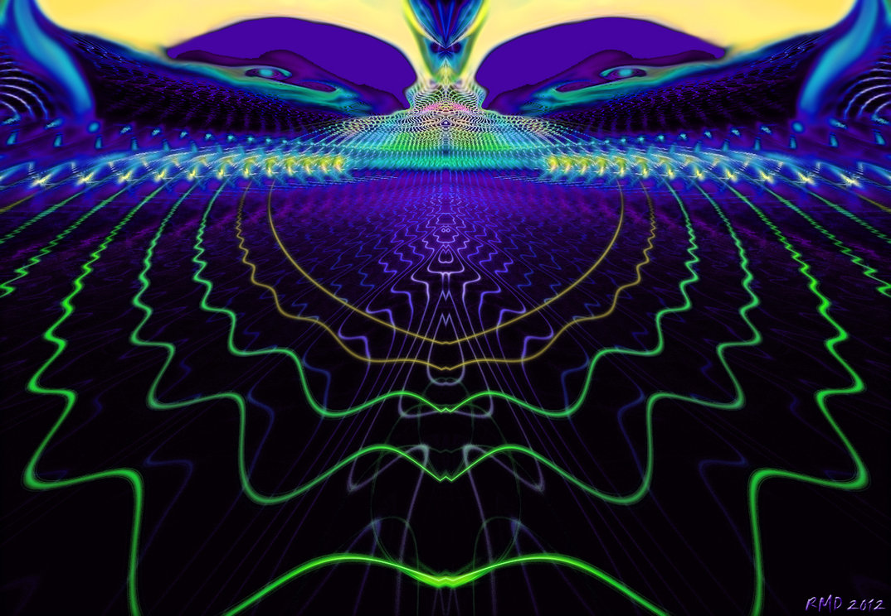

19 Сигналы
Я решила проверить: что будет, если я вообще перестану запрашивать их поток. Я уже поняла, что запрос потока - это моё активное действие, хотя иногда они сами посылали мне сигналы.
Сигналы усилились.
- Я не могу все время вас слушать. Можем согласовать сигналы, если вам понадобится мне что-то сказать?
Мне послали слабый сигнал. Я ощутила его как легкую пульсацию справа у виска.
- Это значит, что если есть возможность - ты нас слушаешь. Если нет - просишь подождать.
Затем послали сильный сигнал.
- Это значит, есть срочное дело. Но даже в этом случае ты можешь попросить подождать. Ты сама определяешь приоритеты своих дел. Ты можешь даже взять отдых и пропускать наши сигналы. Тем не менее, если мы увидим, что ты долго бездельничаешь, мы тебе сделаем замечание в той форме, в которой сочтем нужным.
О черт! Придумала на свою голову эти сигналы. Или стоп.. а я ли их придумала?
Я похолодела.
Если они могут считывать мыслеобразы до того, как они сформировались в слова... кто им мешает посылать мне мыслеобразы, которые я принимаю за свои... то есть... ой... то, что я считаю своими мыслями - могут быть их мысли, переданные мне!
Ладно... одно успокаивает. Может, это происходит со всеми людьми, но другие этого просто не замечают.
И действительно - начался полный кошмар. Мы начали отрабатывать эти сигналы.
Дергали меня по поводу и без повода. Поди по началу разбери, какой из них срочный, а какой - нет. Все сигналы подавались через правое полушарие посредством характерных ощущений в разных местах. Вскоре систему сигналов все же отладили, но стало не легче.
Тогда я решила проэкспериментировать: что будет, если я вообще перестану обращать внимания на сигналы?
Сначала сигналы просто усиливали. И это бы еще ладно... потом начали перехватывать движения, управлять жестами, заставляли меня улыбаться и вздыхать по поводу и без повода. Я поняла, что чем меньше я слушаю их фразы, тем меньше даю им шансов меня пугать. А это они мастерски проворачивали. Тем не менее, тем же вечером все равно пришлось вернуться к слушанию фраз - гроссмейстер и тут нашел предлог, чтобы меня заинтересовать.
Вновь я втянулась в чужую игру и пришлось следить за кучей мелочей: смотрю ли я в одну точку, получаю ли сигнал о завершении, правильно ли угадываю утерянные фрагменты фраз...
Когда я ложилась спать, в полусне фразы сами по себе начинали визуализироваться в трехмерные структуры.. или даже многомерные.
- Сейчас мы тебе будем отправлять образы нашего мира.
Мне пересылались визуальные мыслеформы, напоминающие картины художника-абстракциониста. Перед закрытыми глазами вспыхивали удивительные картины.
- Твоя задача - удержать наши образы и постараться по возможности их вернуть без изменений.
Некоторые ночи я не спала, начались очень сильные перегрузки.
Через некоторое время начали возникать знакомые пугающие ощущения, напоминающие те, что я испытала, когда меня проводили через кольцо смерти.
И кто меня надоумил тогда, что необходимо умереть, пройти через настоящий кошмар ради какой-то трансформации?
Все это сопровождалось пугалками - а что, если я до сих пор там, не вышла, если та смерть была настоящей и все происходящее - состояние бардо, мир вокруг мне просто мерещится?
Либо эта смерть могла произойти летом на инициации - как рассказывал Эдик, по окончании их инициации человек умирает и рождается вампир.
Так или иначе, стойкое ощущение близкой смерти возникало периодически.
Меня преследовали мысли: а вдруг у меня могла развиться какая-то тяжелая болезнь? Или я вправду схожу с ума?
Я пыталась спать, но не могла - настолько сильными были перегрузки. Мне запретили говорить о происходящем даже с Эдиком. Я оказалась полностью один на один с этим чужим разумом.
В первые разы, когда наступало ощущения смерти, начиналась паника. Я просила оставить меня в покое, не мучить, ждала, когда же это все пройдет. Как мне объяснили, подобные состояния возникали от того, что я допускала ошибки в "обучении". Меня заставляли быть крайне внимательной, но сил уже было мало. Я уже не знала, что со мной будет, чем это все кончится. Я действительно уже скользила по грани. Я могла бы на самом деле сойти с ума, если бы это не сопровождалось временами удивительными моментами...
